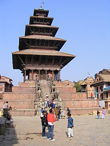
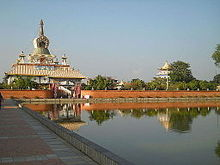
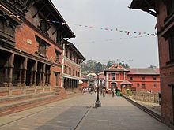
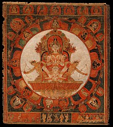
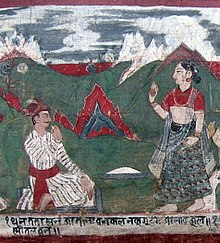
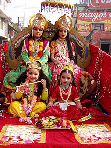
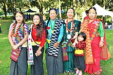
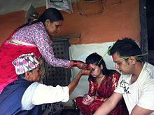

Definetly a place on earth.
Nepal is a place of many things, such as food, clothing, religion, and culture. Lets take a look at some examples by travelling there!
The first food is Dal bhat and is very common in Nepal. Here is what it looks like:

Dal bhat is a traditional meal from the Indian subcontinent, popular in many areas of India, Bangladesh and Nepal. It consists of steamed rice and a cooked lentil stew called dal. It is a staple food in these countries. Bhat or Chawal means "boiled rice" in a number of Indo-Aryan languages.
The second food is Momos and this is what it looks like.

This is one of the favourites for tourists and is a must try for everyone visiting Nepal. Momos are small envelopes of white flour stuffed with veggies or minced lamb or chicken. They are served with different kinds of sauces and mayonnaise which makes the combination a delicious snack. This food in Nepal has taken India by storm and is a popular street food across many countries as well.
The third and final dish i will show you is, drum roll please:
It is one of the most commonly cooked Nepalese dish during special occasions. Khir is considered as the purest foods since it consists of only milk and rice. It is made with milk, sugar, cardamom, rice, butter, and dry fruits.
Now, time to move on to...
Now, lets begin. The most common religion is Hinduisim with 81.3% (as of 2011, est.), which is pretty big, with Nepal's population being 30,424,878 (as of July 2021, est.). The second most popular religion is Budhisim, with only 9% instead (as of july 2021 also.). Now, lets talk languages. (these are all 2011 est.) Nepali, at 44.6%, is Nepal's own language (take a wild guess how i know.), second Maithali (11.7%), and third, Bhojpuri (6%). Now, before we talk fashion, here's 2 ethnic groups. Chhettri at 16.6% and Brahman-Hill at 12.2% (all 2011 est.). Now, I belive that brings us to...
Oh boy here we go... 5 clothing items 321go:
Nepalese men are known for the cute little handmade ‘topis’ that they wear. The innocent smiling faces of these Himalayan men wearing these ‘topis’ are the first thought that strikes us whenever think of them. This Topi, also known as Dhaka ko Topi, actually mean headgear and is named after the capital of Bangladesh-Dhaka, because of the import of the raw materials made from there. However, they no longer depend on imports from Dhaka.
Daura Suruwal is the national dress of Nepal. It was introduced by the then Prime Minister of Nepal of the 19th Century Jang Bahadur Rana. It is also worn vastly by men of Sikkim and Darjeeling. Daura refers to the upper shirt or Kurta and Suruwal are the trouser worn. For years, Daura Suruwal has remained the same due to its religious significance and nostalgia. The Daura Suruwal consists of 8 strings (since 8 is considered to be a lucky number according to the Nepalese people). It refers to Astamatrika-Singini which is as follows: Biagini, Kumari, Barahi, Brahmayani, Indrayani, Maheshwari, Byasnabi, and Mahalaxmi.
Clothes used on a day-to-day basis are as important as the festive dresses of Nepal. Dhoti is such a dress worn on a regular basis by men residing in the more humid parts of Nepal where comfortable wearing is of utmost importance. It is basically a long plain piece of fabric which is wrapped around the hips of men and tied around the waist as a substitute for trousers.

Lungis are similar to dhotis worn but with the purpose of comfort wear. The ends of the lungi are sewn together and they are worn by men as a long sort of skirt with one end open. Lungis are also worn exclusively by Indians. They are often sold in a variety of colours and have become a very common house-wear.
This is the female equivalent dressing of the Daura Suruwal. Gunyou Cholo has a special significance apart from being a national dress of Nepal. It is used to mark the specific age of a girl(7 to 8 years). It is given to a 7 or 8-year-old girl to make a mark of her womanhood and celebrate the fact that she is slowly turning into a woman. It consists of a cholo(blouse) and a skirt accompanied by lots of jewellery. Sadly enough, after the political uprising in 2011, both Daurya Suruwal and Gunyou Cholo have been removed as the national dress of Nepal. They continue to be worn only as ethnic wears.
Anyways...
Alright this shoud be easy... Nepali architecture or Nepalese architecture is a unique strain of art and practicality. Situated in between the trade routes of India, Tibet and China, Nepali architecture reflects influences from both these cultural strongholds. The pagoda architectural tradition figures prominently among Hindu temples in the country. The pagoda architectural tradition as well, along with the Tibetan tradition of Buddhist architecture and the stupa in contrast is widely used among Buddhist temples throughout the country. Mugal style, summit style, dome style also have great scope in Nepal. Here are some examples:
  Now for part 2, ART! 2 examples, now with NEW captions!:
Mandala of Chandra, God of the Moon, A late 14th–early 15th-century painting
Kesh Chandra (A mythical character in the folklore in Kathmandu) and his sister; A picture dated 1223 AD
Now for the last thing:
Several of the festivals of Nepal last from one to several days. As a predominantly Hindu and Buddhist nation, most of the Nepalese festivals are religious ones. The festivals of Nepal have their roots in Hinduism as more than 80% of the population of the country is Hindu. Buddhism, the second-largest religion of the nation which accounts for 9% of the population, has influenced the cultural festivals of Nepal. Dashain or Vijaya Dashami is the longest and the most important festival of Nepal. Generally, Dashain falls in late September to mid-October, right after the end of the monsoon season. It is "a day of Victory over Demons". The Newars celebrate the festival as Mohani, Tihar or Dipawali, Holi, Saraswati Puja, Rakshabandhan, Bhai Dooj, Janmashtami, Gai Jatra, Nag Panchami, Teej, Chhath, Kartik Poornima, Maghe Sankranti, or Makar Sankranti Maha Shivratri and Chhechu are widely celebrated important festivals of Nepal. New Year's Day of the lunar calendar Nepal Sambat occurs in November. Several Jatras take place throughout the year and public holidays are declared in some regions. Now, examples (with captions):
Costumed Hindu girls of Kathmandu during festival time in Nepal
Women in cultural costume at Ubhauli Kirati festival 2017 at Gough Whitlam Park, Earlwood
Senior offering Dashain Tika on great Nepali Hindu festival at a traditional home.
All of these images belong to their respective owner